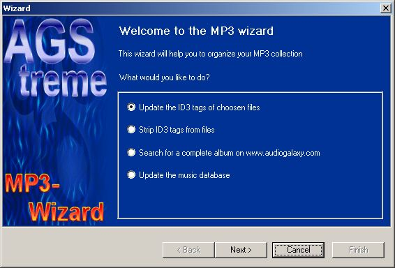

The wizard
To show the "Wizard" dialog, click on the button in the
toolbar

The operations
- Update the ID3 tags of choosen
files :
With this option you can add tags to
your MP3 files.
- Strip ID3 tags from files:
Remove all ID3 tags from
choosen files. This is useful if they contain crap...
- Search for a complete album on www.audiogalaxy.com:
This
will try to find all songs of a specific album on audiogalaxy. Unfortunately
there's a bug in the CDDB control (not, it's not my fault... Write your
complains to CDDB :-) that makes it hard to find mathing album informations
:-(
As soon as CDDB updates their control, I will integrate it into
AGStreme...
- Update the music database:
This will build up the
music database of all your songs.